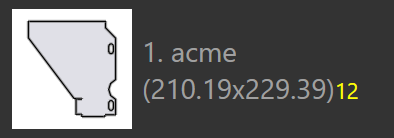

Mode Nesting
Mesin nesting di TecZone Laser dapat menyusun rancangan dari pekerjaan nesting secara efisien. Anda juga dapat mengambil salah satu rancangan yang di-nesting (atau bahkan memulai dengan lembaran kosong) dan secara interaktif menambahkan komponen ke dalamnya, memindahkan dan memutar komponen.
Nesting Otomatis
Awalnya, Anda menambahkan lembaran dan komponen ke dalam pekerjaan nesting. Saat Anda kemudian beralih ke tab Layouts, nesting akan dilakukan secara otomatis. Selanjutnya, Anda dapat mengubah daftar komponen, atau mengubah beberapa pengaturan, dan kemudian kami memiliki beberapa opsi untuk melakukan nesting ulang komponen dengan pengaturan yang berbeda-beda.
Menambahkan lebih banyak komponen ke lembaran
Anggaplah Anda telah menambahkan beberapa komponen tambahan ke pekerjaan nesting, dan komponen tersebut belum di-nesting. Untuk menggunakan mesin nesting untuk menempatkan komponen-komponen ini pada lembar, pertama-tama pilih layout[1] (biasanya ini adalah lembar terakhir, yang kemungkinan hanya terisi sebagian). Kemudian, klik ikon Nest dari baris alat di sebelah kiri, lalu pilih Pack remaining sheet area automatically. [2]

Komponen yang masih harus di-nesting ditempatkan pada area lembar yang tersisa. Opsi ini tidak mengubah komponen apa pun yang telah ditempatkan pada lembar, dan terkadang digunakan untuk melakukan nesting sebagian lembar secara manual, kemudian meminta mesin nesting untuk menyelesaikan sisa nesting. Gambar di bawah ini menunjukkan komponen yang baru ditambahkan dengan warna kuning, dan Anda dapat melihat komponen lama belum dipindahkan:

Susun ulang - lembar sisa
Jika Anda tidak perlu mempertahankan posisi komponen yang lebih lama, Anda bisa mendapatkan hasil yang lebih baik dengan meminta mesin nesting untuk menyusun ulang seluruh lembar. Pilih Rearrange to create a remainder sheet, dan TecZone Laser akan melakukan nesting ulang semua komponen pada lembar, mencoba mendapatkan lembar sisa persegi panjang yang rapi di sebelah kanan, yang dapat digunakan sebagai bahan baku untuk nesting di masa mendatang.

Dapat dilihat bahwa lembar di atas memiliki komponen yang sama seperti sebelumnya, tetapi dikemas lebih rapat, sehingga lembar sisa dapat dipotong untuk digunakan.
Susun ulang - gunakan lembar penuh
Jika lembar sisa terlalu kecil untuk digunakan, akan lebih baik meminta mesin nesting untuk mengemas ulang lembar tersebut dengan sedikit lebih longgar, sehingga semua komponen tetap ada di lembar, tetapi jarak antar komponen ditambah untuk menggunakan seluruh area lembar. Ini bisa dilakukan dengan memilih Rearrange to use full sheet dari menu:

Nesting Manual
Buka rancangan untuk mengedit baik dari tab Rancangan pada Panel Nesting, atau dengan membuka file .fxlyt yang telah Anda simpan sebelumnya.
Menambahkan komponen
Anda dapat menambahkan komponen ke rancangan dengan mengklik tombol Tambahkan di baris alat kiri. Daftar semua komponen dalam pekerjaan nesting akan ditampilkan:

Dengan mengklik salah satu komponen dari daftar, komponen tersebut akan ditambahkan ke lembaran (mesin nesting akan digunakan untuk mencari posisi optimal untuk komponen tersebut, tetapi Anda dapat mengubahnya nanti). Legenda pada komponen menggunakan warna-warna berbeda untuk menunjukkan arti yang berbeda, sebagaimana tercantum di bawah ini:
 |
12 komponen di-nesting (jumlah yang diperlukan) |
|
2 komponen di-nesting lebih sedikit dari yang diperlukan |
|
Diperlukan 18 komponen, 20 di-nesting (+2) |
|
Jumlah komponen yang dibutuhkan sebanyak 24 telah di-nesting |


Saat Anda menggerakkan mouse ke atas komponen dalam daftar komponen, TecZone Laser akan segera menghitung posisi penempatan yang tepat untuk komponen tersebut dan memasukkannya sementara ke dalam lembar dengan warna biru, sehingga Anda dapat menilai apakah posisi tersebut sudah tepat. Dengan demikian, Anda dapat dengan cepat menempatkan sejumlah komponen pada lembaran hanya dengan menggerakkan mouse ke atas komponen tersebut dan mengkliknya.

| Setelah komponen ditempatkan pada lembar, komponen tersebut dapat dipindahkan, diputar, atau diulang menggunakan Panel Penempatan. |